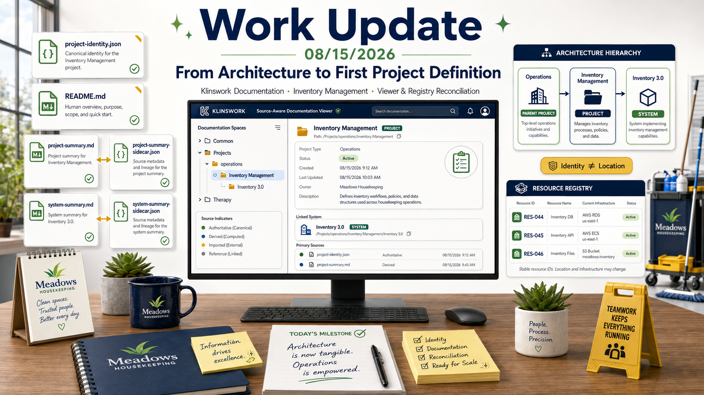

Quick reading path
This document contains five gold milestone notes. Follow the pointing-hand links for a short architecture-and-outcome path, or continue through the complete work record below.
What changed
Executive Summary, Source Discipline, Starting Position, and Session Entry
1. Executive summary
The August 8–9 weekend established the broad prerequisites for a durable Klinswork environment:
- stable Resource identity;
- Resource Registry routing;
- Activities-based provenance;
- repository orientation;
- Startup;
- progressive context loading;
- semantic context requirements;
- controlled terminology;
- high-level operational architecture;
- distinction among Projects, Systems, Applications, Resources, and environments;
- explicit uncertainty;
- preservation of historical terminology;
- a direction toward formal Project/System records.
But the earlier weekend still stopped short of a proven Project Definition.
The architecture knew that Project records were needed.
It did not yet know exactly how those records should be divided among:
- intrinsic identity;
- local orientation;
- human-readable narrative;
- machine-readable structured companions;
- relationships;
- Resources;
- System documentation;
- implementation plans;
- discovery;
- Viewer behavior.
August 15 attacked that unresolved layer directly.
The day's central sequence was:
reconcile ontology
↓
formalize record families
↓
separate Entity Records from sidecars
↓
define Project Identity profile
↓
build Project Identity template
↓
instantiate Inventory Management Project identity
↓
create Project-local orientation
↓
create human-readable Project Summary
↓
create Project Summary sidecar
↓
document principal System: Inventory 3.0
↓
test source-aware discovery
↓
upgrade Viewer path
↓
reconcile Resource Registry
By the end of the session, the current repository physically contained:
Inventory Management/
├── implementation-plans/
│ ├── implementation-plan.md
│ └── README.md
├── sidecars/
│ └── project-summary-sidecar.json
├── summaries/
│ └── project-summary.md
├── systems/
│ └── Inventory 3.0/
│ ├── sidecars/
│ │ └── system-summary-sidecar.json
│ ├── summaries/
│ │ └── system-summary.md
│ └── README.md
├── project-identity.json
└── README.md
This is the first time the Klinswork Project Definition architecture existed as a coherent real example rather than only as a conceptual target.
A second major result was the Documentation Viewer transition.
The online Viewer now uses:
documentation-viewer-sources.json
↓
documentation-viewer-manifest.py
↓
documentation-viewer-manifest.json
↓
json-viewer.html
instead of depending solely on the legacy single-root:
manifest.py
↓
json-manifest.json
The new manifest successfully discovered records from:
common
projects
therapy
and, during testing, reported the two newly added Project-space sidecars.
The session closed with a Registry reconciliation that preserved stable Resource identity while updating stale physical locations and recording every material change in Activities.
This is a direct realization of the identity-versus-location principle established the prior weekend.
2. Scope and source discipline
This summary follows the same evidence discipline established in the August 8–9 comprehensive record.
It distinguishes:
current architecture records
historical baseline
repository evidence
Registry evidence
conversation reconstruction
planning evidence
implementation evidence
current verified behavior
rather than collapsing them into one undifferentiated narrative.
2.1 Prior-weekend baseline
The principal baseline is:
summary-2026-08-08-09-klinswork-weekend-architecture.md
That summary is important for two reasons.
First, it records the architectural state from which today's work began.
Second, it already established the rule that an undeclared work session should be reconstructed honestly rather than rewritten as though its final architecture had been prospectively planned.
Today's summary continues that rule.
2.2 Current architecture records
The strongest architecture sources from August 15 include:
- Meadows Housekeeping Projects Summary;
- Definitions tab;
- Documentation tab;
- Architecture Changelog;
- Record Profile Library files;
- Record Profile Registry;
- Project Identity template;
- Inventory Management Project Definition files;
- current repository tree;
- current Documentation Viewer source registry and generated manifest;
- current Resource Registry Resources and Activities.
2.3 Repository evidence
The current repository tree is treated as physical evidence.
It answers:
What is physically present in the repository at the time the tree was generated?
It does not, by itself, answer:
- which record is authoritative;
- which entity owns a fact;
- whether a file is historical or current;
- whether a path constitutes identity;
- whether one file semantically belongs to another Project.
That distinction remains fundamental.
2.4 Registry evidence
The live Resource Registry is the current authority used here for:
- Resource IDs;
- current registered locations;
- descriptions;
- Resource Type;
- Activity history represented in the Registry;
- evidence-derived LAST UPDATE values.
The Registry is not treated as the authority for every fact contained in the Resources it routes to.
2.5 Conversation-reconstructed details
Some sequencing details are reconstructed from the August 15 conversation.
These include:
- the exact order in which Project Definition artifacts were created;
- the discussion leading to Project Summary versus System Summary;
- the batch-launcher error;
- the online Viewer test;
- the PST-SP Record Profile template preview discovery;
- the decision to perform Registry cleanup after the Viewer test.
Where exact timestamps were not independently recorded, this summary does not invent them.
2.6 Planning evidence versus implementation evidence
Historical plans and roadmaps remain planning evidence unless execution is separately established.
This matters especially for Inventory 3.0.
The System Summary deliberately distinguishes:
roadmap / design requirement
≠
historically implemented feature
≠
current live implementation truth
2.7 Chronology caveat
The final architecture visible at the end of the day was not known in complete form at the beginning of the day.
The summary therefore preserves:
what was already true
what was discovered
what was decided
what was created
what was tested
what was revised
what remains unresolved
without pretending that the final result was a pre-approved session plan.
3. Starting position inherited from August 8–9
The prior weekend ended with a much stronger Klinswork architecture, but several key pieces were still provisional.
The environment had established or substantially advanced:
- Documentation as a recursive cross-project undertaking;
- a Resource Registry;
- stable
RES-###identifiers; - Activities as provenance;
RES-000 — CHATGPT — READ THIS FIRST;- Startup as a bootstrap concept;
- semantic context requirements;
- Registry-based Resource Resolution;
- a working project/system architecture;
- a Meadows high-level architecture document;
- Viewer and manifest concepts;
- project/system record direction;
- open determinations;
- historical-era preservation.
The prior weekend also explicitly identified Project/System records as a next major test.
Inventory Management was already recognized as a high-information-value exemplar because it had:
- real operational meaning;
- digital implementation;
- paper/non-digital relationships;
- historical data;
- application history;
- Resource relationships;
- previous documentation;
- current questions;
- cross-system integrations.
But the earlier ontology was still transitional.
The August 8–9 comprehensive summary described approximately:
Housekeeping Operations
↓
Inventory Management [system]
↓
Inventory 3.0 [application / implementation]
and:
Task Assignment and Tracking [system]
↓
Work Queue [application]
By August 15, that model required another correction.
The architecture had become strong enough to recognize that Inventory Management and Task Assignment and Tracking were not merely operational systems inside one giant project.
They were substantial Project-level bodies of work in their own right.
Today's session therefore began from a strong but still transitional ontology.
4. Why another undeclared weekend work session happened
This is the second consecutive weekend in which substantial Klinswork work emerged without first being declared as a formal structured work session.
That recurrence deserves explanation.
The most immediate explanation is architectural.
The intended structured work-session model depends on foundations such as:
Startup
↓
identify current Project / System / work target
↓
resolve identity
↓
load local orientation
↓
load current human-readable definition
↓
resolve relationships
↓
resolve Resources
↓
load applicable workflow
↓
load implementation plan / run state
↓
perform work
But many of those records and routing rules were precisely what the session was still constructing.
This creates a bootstrap problem.
A session cannot fully rely on:
Project Identity
Project Summary
System Summary
Record Profiles
source-aware discovery
Registry routing
before those things exist.
Therefore today's undeclared entry was not simply failure to use the architecture.
It was partly the final stage of building the architecture needed to make future use meaningful.
At the same time, today's work changes the justification going forward.
At the beginning of the day:
the foundations were incomplete
By the end of the day:
one Project Definition exemplar exists
source-aware discovery exists
Viewer support exists
Registry routing is cleaner
That means the next real work session can be a stronger test of the declared-session model.
The progression across two weekends is therefore:
AUGUST 8–9
discover the foundations required
for restorable work context
AUGUST 15
instantiate and test
a large portion of those foundations
NEXT
use the foundations prospectively
in a declared work session
This should become an explicit evaluation criterion.
Semantic architecture
Project / System Reconciliation, Identity, and Architecture Change Control
5. Major ontology correction — Project and System were separated again
One of the day's earliest important corrections concerned the hierarchy itself.
The working Klinswork hierarchy became:
KLINSWORK
↓
Project
↓
Child Project
↓
System
↓
Resource
where Parent Project and Child Project are not different entity types.
They are both Projects.
The parent/child distinction is a relationship.
The current Operations family became:
Klinswork
├── Operations [Project]
│ ├── Inventory Management [Project]
│ │ └── Inventory 3.0 [System]
│ ├── Scheduling [Project]
│ │ └── systems pending reconciliation
│ ├── Task Assignment and Tracking [Project]
│ │ └── Work Queue [System]
│ └── Employee Achievements [provisional Project candidate]
└── Documentation [separate cross-project Project]
This is a significant correction from the previous weekend's transitional model.
5.1 Why Inventory Management became a Project
Inventory Management is not merely one implemented mechanism.
It represents a durable body of work involving:
- operational function;
- current implementation;
- history;
- decisions;
- Resources;
- documentation;
- changes;
- future work;
- unresolved questions;
- relationships to other Projects;
- potentially multiple Systems over time.
That makes it more naturally Project-level.
5.2 Why Inventory 3.0 became a System
Inventory 3.0 is a coherent implemented mechanism within the broader Inventory Management undertaking.
It can therefore be described as a System without making it identical to the Project.
5.3 Why Work Queue became a System
The same logic applies to:
Task Assignment and Tracking
= Project
Work Queue
= System
This creates a more durable hierarchy.
The Project can survive implementation replacement.
The System can evolve independently of the Project's broader purpose.
5.4 Operational Function remains separate
The architecture also preserved:
Operational Function
= real-world function independent of implementation
This prevents Project and System from absorbing the underlying operational reality.
For Inventory Management, the operational function includes inventory control whether performed through:
- software;
- paper;
- physical counts;
- supervisor practice;
- manual correction;
- other future mechanisms.
6. Identity was explicitly separated from hierarchy
The ontology correction led to a stronger identity rule.
The session adopted the invariant:
identity != name
identity != location
identity != hierarchy
identity != status
identity != implementation
For Projects specifically:
Project identity
!= Project name
!= repository path
!= parent Project
!= child Projects
!= System
!= application
!= Resource
!= deployment
!= lifecycle state
This was not merely philosophical.
It directly affected:
- Project ID design;
- Project Identity template fields;
- Inventory Management record placement;
- relationship modeling;
- Registry design;
- README language;
- sidecar scope;
- Viewer interpretation.
The practical consequence is:
rename Project
≠ new Project
move Project folder
≠ new Project
change parent
≠ new Project
replace System
≠ new Project
replace deployment
≠ new Project
That is the foundation for durable PROJ-### identity.
7. Permanent Project IDs remained intentionally unassigned
The day's architecture could have rushed to assign:
PROJ-001
PROJ-002
...
It deliberately did not.
The Inventory Management Project Identity record therefore contains:
projectId: ""
projectIdAssignmentStatus: unassigned
This is an explicit state.
It is not missing data to be casually filled.
The reason is that several authority questions remain open:
- Who allocates
PROJ-###values? - Is the Project Registry the allocator?
- Is the Project Identity Entity Record the identity master?
- What happens if those sources disagree?
- Does the Entity Record itself need a record ID distinct from the Project ID?
The session treated visible uncertainty as preferable to premature stability.
8. Project Registry authority remained deliberately unresolved
A particularly important open question concerned the relationship between:
Project Identity Entity Record
and:
Project Registry
The architecture currently gives the Project Identity record a narrow intended authority:
stable Project identity facts explicitly assigned to the profile.
The Project Registry is still expected to support:
- registration;
- global indexing;
- routing;
- possibly Project-ID allocation.
But the exact conflict/precedence model is not frozen.
This is recorded as an open architecture question rather than being silently decided inside the first template.
That restraint matters because the first exemplar should test the architecture rather than force every unresolved global issue into Inventory Management.
9. Architecture change control became concrete
The Meadows Housekeeping Projects Summary now includes Architecture Changelog entries documenting the day's architecture changes.
ARCH-001 — Project Identity Vocabulary Reconciliation
Status:
Applied
Purpose:
- reconcile Parent Project → Child Project → System → Resource;
- preserve Operational Function separately;
- correct transitional terminology;
- avoid assigning permanent Project/System IDs prematurely.
The visible date is August 15, 2026.
ARCH-002 — Record Profile Taxonomy and Library Reclassification
Timestamp:
2026-08-15T11:41:00-06:00
This change formalized:
- Record Profile;
- Record Profile Library;
- Profile Template;
- Sidecar;
- Entity Record;
- Record Profile Registry direction;
schemaRoadmap;- authority boundaries.
ARCH-003 — Documentation Project Architecture, Discovery, and Context-Routing Reconciliation
Timestamp:
2026-08-15T12:02:00-06:00
This change reconciled:
- Documentation tab architecture;
- Documentation Spaces;
- Record Profile Library;
- v2 discovery;
- catalogs;
- downstream publication;
- Startup progression;
- current tree generation;
- Resource Registry routing;
- Viewer responsibilities.
These changelog entries are significant because Documentation is recursive.
The method used to define Documentation must itself become part of the Documentation historical record.
Record architecture
Record Profiles, Sidecars, Entity Records, and Project Identity
10. Definitions were expanded into controlled Record Profile vocabulary
The Definitions tab received a major vocabulary extension.
New or reconciled controlled concepts include:
Record Profile
A reusable semantic definition for one recognized Klinswork record family.
A Record Profile defines things such as:
- purpose;
- authority boundaries;
- structural expectations;
- interpretation rules;
- validation expectations;
- versioning;
- Viewer behavior where applicable.
Record Profile Library
The authoritative collection of reusable Record Profile definitions, construction templates, compatibility material, and related registry information.
Profile Template
A concrete reusable file expressing a Record Profile.
Sidecar
A machine-readable structured companion to a human-readable source document.
The human-readable source remains authoritative for the document itself.
A sidecar does not become the identity record of an entity merely because it references that entity.
Entity Record
A canonical structured record that directly identifies or describes a Klinswork entity rather than serving as a companion to another document.
Project Identity is the first implemented example.
Record Profile Registry
A structured index intended to identify recognized Record Profiles and connect them to:
- purpose;
- record family;
- version;
- template;
- compatibility information;
- Viewer interpretation behavior.
Schema Roadmap
The part of a Record Profile that records intended evolution of the profile itself.
It is explicitly separate from future work on the subject represented by an instance.
Authoring Template
A reusable template guiding creation of an authoritative human-readable source rather than a machine-readable sidecar.
These definitions resolved an ambiguity that had been present in earlier Documentation work.
11. The critical sidecar rule was formalized
One of the day's most important semantic rules is:
A sidecar is always a machine-readable structured companion to a human-readable source.
Therefore:
sidecar
!= arbitrary JSON record
and:
entity record
!= sidecar
This rule prevents a dangerous collapse.
Before this distinction, any structured JSON associated with a Project could easily be called a sidecar.
That would make it impossible to distinguish:
"this JSON describes another document"
from:
"this JSON is itself the canonical entity record"
The first Project Definition exemplar was intentionally built to enforce this distinction.
12. Record families became explicit
The current general Record Profile family model is:
document-sidecar
entity-record
authoring-template
This is a major conceptual advance over the earlier Sidecar Profile Registry.
It means the profile system is no longer limited to describing companion JSON.
It can also describe:
- direct entity records;
- human-readable source templates.
This gives the Documentation architecture a more coherent type system.
13. The Templates folder became the Record Profile Library
The repository area formerly understood primarily as:
templates/
was reclassified semantically as:
Record Profile Library/
The current repository tree shows:
Record Profile Library/
├── archive/
├── document-sidecar-base-template-3.0.json
├── generic-document-sidecar-template-3.0.json
├── implementation-plan-sidecar-template-3.1-draft.json
├── lesson-reference-sidecar-template-3.0.json
├── project-identity-template-1.0-draft.json
├── pst-sp-study-guide-sidecar-template-1.0.json
├── README.md
├── record-profile-registry-1.0.json
├── summary-md-template.json
├── work-update-sidecar-template-3.0.json
└── workflow-specification-sidecar-template-3.0.json
This physical structure now reflects the broader semantic role.
The library contains:
- sidecar profiles;
- Entity Record profiles;
- authoring templates;
- compatibility/history material;
- profile registry material.
14. Historical profile material was preserved rather than overwritten
The existing Sidecar Profile Registry was not silently erased.
Historical versions remain under the Record Profile Library archive.
This supports the broader Klinswork historical rule:
current architecture
should not rewrite
historical architecture
as though the current model always existed
Instead:
historical registry
preserved
↓
broader Record Profile Registry
introduced
↓
compatibility relationship
documented
This is the same identity/history discipline used elsewhere in Klinswork.
15. Record Profile Registry evolved beyond sidecars
The broader Record Profile Registry was designed to index more than sidecars.
Its conceptual families became:
document-sidecar
entity-record
authoring-template
The registry includes existing or current profiles such as:
- work-update;
- implementation-plan;
- lesson-reference;
- workflow-specification;
- generic-document;
- PST-SP study guide;
- summary Markdown authoring template.
It also anticipates:
- Project Identity;
- later System Identity.
The Project Identity profile was treated as a new Entity Record profile rather than forcing it into the document-sidecar family.
This is one of the strongest examples of the architecture resisting a convenient but semantically incorrect shortcut.
16. `schemaRoadmap` became a profile-level convention
The session clarified that profile evolution should be represented explicitly.
The top-level:
schemaRoadmap
can preserve:
- planned additions;
- planned changes;
- deprecations;
- migration notes;
- compatibility concerns;
- open profile-design questions.
The critical distinction is:
schema roadmap
= future work on the record/profile structure
subject roadmap
= future work on the Project/System/document itself
Those are not the same thing.
17. Project Identity profile was designed as deliberately narrow
The Project Identity profile was not designed as a giant Project record.
Its narrowness is intentional.
The profile includes areas for:
- profile metadata;
- schema roadmap;
- record state;
- intrinsic identity;
- labels;
- identity evidence;
- registration coordination;
- provenance;
- validation;
- Viewer interpretation;
- template checks.
The intrinsic identity block intentionally excludes:
- parent Project;
- child Projects;
- Systems;
- Applications;
- Resources;
- operational environment;
- dependencies;
- integrations;
- repository path;
- file path;
- URL;
- deployment URL;
- lifecycle status;
- Project phase;
- implementation status;
- current version.
This is one of the day's most important architecture decisions.
18. Project Identity validation rules were made explicit
The Project Identity template includes strong anti-inference rules.
A Project ID must not be inferred from:
- Project name;
- folder path;
- historical numbering;
- parent relationship;
- current System;
- current application;
- spreadsheet;
- deployment;
- Resource.
The profile also rejects encoding hierarchy into the Project ID.
That preserves future flexibility.
19. Labels were separated from identity
The Project Identity template includes:
labels:
canonicalName
aliases
but explicitly treats labels as useful resolution data rather than the identity itself.
This makes renaming conceptually safe.
The exact long-term authority for canonical name and alias history remains open.
That uncertainty is recorded in the profile roadmap.
20. Identity evidence was separated from identity
The template includes an identityEvidence area.
This can preserve:
- identification basis;
- confidence;
- evidence references;
- architecture decision references;
- Activity references;
- notes.
But the evidence is not itself the identity.
A Project can be identified because several documents and decisions support the interpretation.
Those sources do not become the Project merely because they support it.
21. The first Project Identity template was created
The first reusable Project Identity template was created as:
project-identity-template-1.0-draft.json
The current repository tree confirms that it is now present in the Record Profile Library.
The template is generic.
It deliberately avoids Inventory-specific fields.
First Project exemplar
Inventory Management Project Definition
22. Inventory Management was chosen as the first Project Definition exemplar
Inventory Management was already the best-developed candidate.
It had:
- existing operational meaning;
- Inventory 3.0 implementation history;
- an implementation plan;
- data Resources;
- current application Resources;
- previous system-level documentation;
- cross-system relationships;
- historical records;
- open questions;
- enough complexity to expose weak architecture.
That makes it useful as an exemplar.
23. `Inventory Management/project-identity.json` was instantiated
The first Project Identity Entity Record was created:
Inventory Management/project-identity.json
Its key identity state is:
entityType: project
projectId: ""
projectIdAssignmentStatus: unassigned
canonicalName: Inventory Management
The record includes an identity continuity statement asserting that Inventory Management remains the same Project across ordinary changes of:
- name;
- repository location;
- hierarchy;
- System implementation;
- Resources;
- deployment;
- lifecycle;
- operational context.
It does not place mutable relationships inside intrinsic identity.
24. Project Identity was placed at the Project root
The Project Identity Entity Record was deliberately placed here:
Inventory Management/
└── project-identity.json
not here:
Inventory Management/
└── sidecars/
└── project-identity.json
The reason is semantic.
project-identity.json directly represents the Project.
It is not the structured companion to another document.
25. Inventory Management README became local orientation
The Project README was created/reconciled as:
Inventory Management/README.md
Its role is not to be the master authority for every Project fact.
Its role is local orientation.
The governing principle is:
Use the README for orientation. Follow it to the record that owns the fact you need.
The README explains:
- what Project this directory represents;
- Project/System distinction;
- local file roles;
- authority routing;
- current directory structure;
- where implementation plans live;
- principal known System;
- how to resume work;
- what remains unresolved;
- the exemplar's current completion state.
26. Project Summary was separated from Project Identity
The rich human-readable Project definition was created as:
summaries/project-summary.md
This is where explanatory Project meaning belongs.
It contains:
- purpose;
- operational function;
- scope;
- boundaries;
- current state;
- principal System;
- Resource context;
- history;
- relationships in narrative form;
- implementation-plan role;
- resume-work sequence;
- unresolved questions;
- next work.
This division produces:
project-identity.json
= narrow intrinsic identity
README.md
= local orientation
project-summary.md
= rich human-readable Project definition
27. Inventory Management Project purpose was made explicit
The Project Summary defines the purpose of Inventory Management approximately as:
preserve and improve reliable knowledge and operational control of inventory.
The Project exists so inventory can be:
- identified;
- located;
- counted;
- changed;
- traced;
- verified;
- used for operational decisions.
The Project is explicitly not reduced to one application.
Its durable operational chain is represented as:
physical supplies
↓
identified products
↓
identified locations
↓
known or reconciled quantity/state
↓
controlled inventory events
↓
preserved history
↓
verification
↓
operational decisions
28. Inventory Management scope and boundaries were documented
The Project Summary identifies in-scope areas such as:
- inventory state;
- inventory events;
- product reference data;
- location reference data;
- current quantities;
- opening balances;
- receiving;
- use;
- corrections;
- transfers;
- event history;
- reconciliation;
- SDS relationships;
- interfaces;
- validation;
- data integrity;
- reporting;
- documentation.
It also explicitly separates neighboring concerns.
Scheduling
Scheduling owns temporal/person/place assignment.
Inventory Management owns inventory state.
Task Assignment and Tracking
A task can cause inventory effects.
The task lifecycle belongs to Task Assignment and Tracking.
The resulting inventory-state effect belongs to Inventory Management.
Documentation
Documentation supplies infrastructure for describing the Project.
It does not become the owner of inventory truth.
Meadows Housekeeping
Meadows Housekeeping is the primary current operational environment.
It is not the Project identity.
Inventory 3.0
Inventory 3.0 is the principal known System.
It is not the Project.
29. Project Summary sidecar was created as a real sidecar
The structured companion was created as:
sidecars/project-summary-sidecar.json
Its companion is:
../summaries/project-summary.md
This sidecar is intentionally not a Project Identity record.
It structures the human-readable Summary for:
- discovery;
- Viewer presentation;
- topics;
- sections;
- key points;
- concepts;
- recommendations;
- open questions;
- technical validation;
- provenance.
The Markdown Project Summary remains authoritative for the narrative interpretation expressed there.
30. Generic document profile was used without pretending a specialized profile existed
No dedicated Project Summary sidecar profile had yet been defined.
Therefore the Project Summary sidecar used the recognized:
generic-document
profile.
This was a disciplined choice.
The architecture did not invent a profile merely because a more specific name would have been convenient.
The sidecar records the open question:
Should Project Summary documents receive a dedicated document-sidecar profile?
31. Project Summary sidecar indexed the Project definition
The Project Summary sidecar includes structured representations of:
- Project subject;
- parent/current relationships as context;
- principal System;
- purpose;
- scope;
- key points;
- concepts;
- recommendations;
- unresolved questions;
- audience views;
- technical validation;
- sections;
- provenance.
It keeps:
projectId: ""
rather than inventing an identifier.
It references the Project Identity record separately.
System documentation
Inventory 3.0 — System Documentation Without Premature System Identity
32. Inventory 3.0 documentation layer was deliberately completed without System Identity
After completing the Project layer, work moved into:
Inventory Management/
└── systems/
└── Inventory 3.0/
The deliberate target was:
Inventory 3.0/
├── README.md
├── summaries/
│ └── system-summary.md
└── sidecars/
└── system-summary-sidecar.json
No:
system-identity.json
was created.
No:
SYS-###
was assigned.
This was not incompleteness.
It was a methodological choice.
33. Why System Identity was deferred
The Project architecture had just been instantiated for the first time.
Immediately copying it into a System Identity schema would risk propagating untested assumptions.
Instead, the System documentation layer was used to answer:
- Can System meaning be documented without a System Entity Record?
- Which facts appear stable?
- Which facts are implementation-specific?
- Does the version-bearing name
Inventory 3.0create continuity questions? - Which Resources belong to the System versus being shared?
- How should Viewer presentation differ between a System Summary and a future System Identity record?
This lets the exemplar generate evidence before the System Identity schema is frozen.
34. Inventory 3.0 README became System-local orientation
The System README explains:
- what Inventory 3.0 is;
- that it belongs to Inventory Management;
- why no System Identity record exists;
- what local files do;
- what evidence supports the current interpretation;
- how to distinguish historical design from live implementation truth;
- where Project-level implementation plans live;
- how to resume System work;
- unresolved questions.
Its local authority role mirrors the Project README.
35. `system-summary.md` was clarified as different from `project-summary.md`
A useful discussion occurred around the purpose of:
project-summary.md
versus:
system-summary.md
The distinction became:
project-summary.md
answers:
What undertaking are we maintaining and why?
system-summary.md
answers:
What coherent implemented mechanism serves that undertaking?
For Inventory Management:
Project Summary
purpose
operational function
scope
boundaries
current Project state
principal System
Project Resources
Project history
Project open questions
For Inventory 3.0:
System Summary
System purpose
System boundary
architecture
components
datastore
event model
interfaces
validation
System Resources
implementation history
current implementation uncertainty
System open questions
36. Inventory 3.0 System Summary preserved design evidence carefully
The Inventory 3.0 System Summary uses the historical roadmap as design evidence.
It records the architecture baseline:
mobile or desktop browser
↓
Apps Script HTML interface
↓
Apps Script inventory services
↓
Google Sheets datastore
It records the historical sheet model:
Products
SDS
Locations
Current Inventory
Inventory Events
Inv2_Archive
It records event types such as:
OPENING_BALANCE
RECEIVED
USED
CORRECTION_INCREASE
CORRECTION_DECREASE
TRANSFER
But it does not claim that every roadmap item was implemented or that every planned test passed.
37. Inventory 3.0 historical implementation evidence was separated from roadmap intent
The System Summary also incorporates dated historical evidence showing that Inventory 3.0 was actually built and expanded.
Historical July records support use of:
- Google Apps Script;
- Google Sheets;
- JavaScript;
- HTML;
- CSS;
- inventory browsing;
- product pages;
- product filtering;
- SDS links.
Later planning records support the existence of an:
Inventory 3.0 SDS Registry Rebuild and App Integration
plan.
But that plan remains planning evidence unless execution is separately established.
The Summary therefore preserves three levels:
historical roadmap intent
historical implementation evidence
current live truth
38. Inventory 3.0 sidecar was created without implying System Identity
The structured companion:
sidecars/system-summary-sidecar.json
uses the recognized generic-document profile.
Its document type is:
system-summary
It structures:
- System role;
- Project context;
- architecture baseline;
- data model;
- event model;
- Resources;
- historical evidence;
- current-state limitations;
- open questions;
- next work.
It explicitly states that it is not a System Identity Entity Record.
39. The complete Inventory Management exemplar now exists physically
The current repository tree confirms:
Inventory Management/
├── implementation-plans/
│ ├── implementation-plan.md
│ └── README.md
├── sidecars/
│ └── project-summary-sidecar.json
├── summaries/
│ └── project-summary.md
├── systems/
│ └── Inventory 3.0/
│ ├── sidecars/
│ │ └── system-summary-sidecar.json
│ ├── summaries/
│ │ └── system-summary.md
│ └── README.md
├── project-identity.json
└── README.md
This is a major milestone.
The architecture is now observable through real files.
40. What the exemplar proves so far
The exemplar demonstrates that one Project can be described through coordinated records with different jobs:
Project identity
→ project-identity.json
local orientation
→ README.md
human-readable Project definition
→ summaries/project-summary.md
machine-readable Project Summary interpretation
→ sidecars/project-summary-sidecar.json
principal System context
→ systems/Inventory 3.0/
bounded intended work
→ implementation-plans/
Resource routing
→ Resource Registry
relationships
→ future/formal relationship authority
history/provenance
→ Activities + preserved historical records
No single file has to become the universal source of truth.
41. Project Definition architecture is designed but not yet generalized
The Inventory Management exemplar should not immediately be copied as a mandatory folder skeleton for every Project.
The correct sequence remains:
build exemplar
↓
test discovery
↓
test Viewer
↓
test context-naive resume
↓
identify failures
↓
revise profiles
↓
extract genuinely reusable structure
Therefore:
Project Definition architecture is largely designed; the reusable Project Definition template is not yet proven.
Discovery architecture
Documentation Project, Documentation Spaces, and Source-Aware Discovery
42. Documentation Project was reconciled around current architecture
The Documentation tab of the Meadows Housekeeping Projects Summary underwent major reconciliation.
Its opening now explicitly identifies Documentation as a cross-project Klinswork Project.
Its scope includes:
- controlled vocabulary;
- architecture change control;
- Record Profile Library;
- Entity Records;
- human-readable sources;
- sidecars;
- registries;
- Documentation Spaces;
- source registry;
- generated manifests;
- catalogs;
- Viewer;
- downstream HTML/graphics;
- Startup;
- workflow-driven context routing.
The current conceptual structure is:
Documentation Project
├── Controlled vocabulary / ontology
├── Architecture Changelog
├── Open Determinations
├── Record Profile Library
├── Entity Records
├── Human-readable source documents
│ ↕
│ structured sidecars
├── Registries
├── Documentation Spaces
├── source registry
├── generated manifests
├── catalogs / aggregate discovery records
├── Klinswork Documentation Viewer
├── downstream HTML / graphics / explanatory products
└── Startup + workflow-driven progressive context routing
43. Documentation became explicitly self-describing
Documentation has a recursive property.
It contains the systems used to document Documentation itself.
The day's architecture therefore emphasizes:
- versioned methodology;
- changelog history;
- Record Profiles;
- authority boundaries;
- source-aware discovery;
- preserved bootstrap artifacts.
The recursion is controlled through explicit versions and provenance.
44. Fresh physical repository state became a formal requirement
The architecture now distinguishes:
semantic architecture
from:
current physical tree
When current physical structure matters, the intended path is:
current repository structure required
↓
Resource Registry resolves tree-generation Resource
↓
run build_repository_tree.py
↓
consume fresh repository-tree output
↓
treat tree as physical evidence
The tree does not become semantic authority.
45. Documentation Spaces became explicit
The source-aware Viewer architecture now recognizes multiple Documentation Spaces.
Current configured spaces include:
common
Common Documentation
root:
documents/Klinswork Documentation Viewer
projects
Projects
root:
documents/Klinswork Documentation Viewer/projects
therapy
Therapy Component Library
root:
documents/therapy-documentation-work/therapy-component-library
This solves a long-standing discovery problem.
46. Common and Projects discovery were separated to prevent duplicates
The nested Projects directory is pruned from the Common source scan.
Without pruning:
Common scan
finds projects/
+
Projects scan
finds same records
would create duplicates.
The source registry therefore makes discovery rules explicit.
47. Source registry became a first-class Viewer artifact
The current discovery chain is:
documentation/documentation-viewer-sources.json
↓
documentation/documentation-viewer-manifest.py
↓
documentation/documents/Klinswork Documentation Viewer/
documentation-viewer-manifest.json
↓
json-viewer.html
The source registry defines:
- source IDs;
- labels;
- roots;
- discovery modes;
- pruning;
- exclusions.
This moves discovery policy out of Viewer code and into a structured source configuration.
48. Viewer record address became source-aware
The v2 discovery model effectively uses:
(sourceId, path)
as a record address.
This allows identical relative paths to exist in different Documentation Spaces without becoming ambiguous.
It also allows the Viewer to present a unified tree while preserving source identity.
Viewer implementation
Local Launcher, Online Viewer Migration, and PST-SP Preview Discovery
49. The local launcher was recognized as stale
After Project/System records were added, attention returned to:
open-json-viewer-v1.6.0.bat
The batch file still launched the local Viewer.
But the architecture had changed.
The launcher needed to:
- locate the Documentation root;
- refresh the source-aware manifest;
- launch the local Python Viewer.
A transitional launcher was therefore designed.
50. First launcher revision exposed a Windows quoting problem
The initial revised batch command successfully ran the source-aware manifest builder.
The console showed:
Records: 69
Valid JSON: 69
Invalid JSON: 0
Archived: 14
and:
common: 66 records
projects: 2 records
therapy: 1 record
This was important.
The manifest refresh itself succeeded.
The failure occurred only when the local Viewer launched.
The error path ended with a literal quote:
...\Klinswork Documentation Viewer"
The cause was %~dp0 ending in a backslash and interacting badly with the quoted --folder argument.
This was diagnosed from the visible command output rather than guessed.
51. Launcher paths were normalized
The improved batch design used:
for %%I in ("%~dp0.") do set "VIEWER_ROOT=%%~fI"
for %%I in ("%~dp0..\..") do set "DOCUMENTATION_ROOT=%%~fI"
This normalizes the directory paths without a trailing slash.
The resulting path becomes:
C:\...\documentation\documents\Klinswork Documentation Viewer
rather than:
C:\...\documentation\documents\Klinswork Documentation Viewer\
The launcher remains physically in the Viewer root.
That location is intentional.
52. The batch launcher remains a transitional local-runtime bridge
The local Python Viewer is still v1.6-era code.
Therefore refreshing the v2 manifest does not automatically make the local Python runtime source-aware.
The launcher currently bridges two generations:
launcher
refreshes source-aware v2 manifest
+
launches legacy/local Python Viewer
This is acceptable as a transitional state as long as the distinction is explicit.
53. Online Viewer was still using the legacy manifest
The online json-viewer.html was then inspected.
Its static GitHub Pages mode still loaded:
json-manifest.json
and expected:
files[]
That meant the online Viewer had not yet been upgraded to the new source-aware discovery architecture.
This was the next obvious reconciliation target.
54. Online Viewer was upgraded to the source-aware manifest
The updated online Viewer now uses:
documentation-viewer-manifest.json
and primarily reads:
records[]
The Viewer also retains legacy:
files[]
fallback compatibility.
For source-aware records, it uses:
manifestRelativePath
for fetch routing.
This prevents the display path from being confused with the actual relative fetch path.
55. Online Viewer branding was updated
The static Viewer was rebranded from:
Local JSON Explorer
toward the formal product name:
Klinswork Documentation Viewer
The online runtime identifies itself as:
2.0-draft
GitHub Pages
source-aware manifest
This better reflects its current role.
56. The source-aware online Viewer worked
After publication, the online Viewer successfully displayed the new source-aware tree.
The visible tree included:
projects
└── operations
└── Inventory Management
├── sidecars
│ └── project-summary-sidecar.json
└── systems
└── Inventory 3.0
└── sidecars
└── system-summary-sidecar.json
This is the first direct UI proof that the Inventory Management exemplar can be discovered through the Projects Documentation Space.
57. The Viewer discovery test passed an important milestone
The manifest output had already reported:
projects: 2 records
The online tree made those records visible.
Those two records correspond to the newly added:
project-summary-sidecar.json
system-summary-sidecar.json
This is a significant checkpoint.
The architecture did not merely create files in the right directory.
The source-aware discovery layer found them.
58. Project Identity discovery remains a separate test
The current Projects discovery mode is still sidecar-oriented.
Therefore:
project-identity.json
requires deliberate Entity Record discovery support.
The architecture explicitly rejects a shortcut such as:
put Project Identity in the sidecars directory so the existing scanner will find it.
That would make physical convenience corrupt semantic type.
The correct future work is:
teach discovery about Entity Records
not:
mislabel Entity Records as sidecars
59. PST-SP Viewer test exposed a profile-template/instance distinction
The online Viewer test produced another valuable discovery.
The selected file was:
Record Profile Library/
└── pst-sp-study-guide-sidecar-template-1.0.json
The Viewer correctly saw:
previewMode: pst-sp-study-guide
and launched the specialized PST-SP preview.
But because the selected file was a template, not an instantiated PST-SP study-guide record, the preview showed:
Untitled document
Untitled record
and very little content.
This was initially easy to interpret as a broken PST-SP renderer.
The real issue was more subtle.
60. Record Profile templates need different Viewer behavior from instantiated records
The PST-SP test revealed a general Viewer requirement.
Current behavior:
Record Profile template
carries previewMode
↓
Viewer invokes rich subject preview
Better behavior:
instantiated PST-SP sidecar
→ rich PST-SP subject preview
PST-SP Record Profile template
→ Record Profile / Template preview
A Record Profile template preview should likely emphasize:
- profile ID;
- version;
- record family;
- intended preview mode;
- schema roadmap;
- template fields;
- construction guidance;
- blank operational fields;
- compatibility.
This is an excellent example of an exemplar revealing a missing semantic layer.
61. The Viewer is becoming more than a JSON tree browser
The day's tests reinforce the direction:
generic structured inspector
+
record-family recognition
+
specialized previews
+
source-aware discovery
+
authority-aware interpretation
The Viewer is becoming a documentation portal rather than merely a JSON explorer.
That makes correct record typing increasingly important.
Identity and provenance
Resource Registry Reconciliation and Activity History
62. Resource Registry stale-link review followed the Viewer work
After the Viewer succeeded, attention shifted to the live Resource Registry.
A search identified a cluster of stale references still using:
documents/work-update-catalog
even though the current repository area is:
documents/Klinswork Documentation Viewer
The stale cluster included:
- Viewer;
- catalogs;
- root;
- legacy manifest;
- legacy manifest builder;
- documentation sidecars;
- therapy sidecar;
- project documentation root.
This was exactly the kind of problem the Resource Registry was built to solve.
63. Stable Resource identity allowed the migration to be historical rather than destructive
The migration followed:
resource identity != location
Instead of creating entirely new Resource IDs for everything that moved, the cleanup asked:
Is this the same conceptual Resource at a new location, or is this a distinct new Resource?
That produced two classes.
Same Resource, new current location
Examples:
- Online Viewer;
- chemical catalog;
- document catalog;
- lesson catalog;
- workflow sidecar;
- lesson sidecars;
- Project documentation root;
- PST-SP sidecar.
Distinct new Resources
Examples:
- source-aware Documentation Viewer manifest;
- source-aware manifest builder;
- Viewer source registry.
The legacy single-root manifest and builder were preserved as their original Resource identities.
64. `RES-011` Online JSON viewer was reconciled
RES-011 retained its stable Resource identity.
Its current location became:
documents/Klinswork Documentation Viewer/json-viewer.html
Its description was updated from:
Local JSON Explorer v1.6.1
json-manifest.json
to the current:
Klinswork Documentation Viewer 2.0-draft
source-aware documentation-viewer-manifest.json
GitHub Pages static mode
Local Python compatibility remains part of the environment.
65. `RES-019` evolved from Work Update Catalog root to Viewer root
The old Resource was named:
Work Update Catalog root
The directory had evolved substantially.
Instead of deleting and replacing the Resource, the session preserved identity continuity and renamed it:
Klinswork Documentation Viewer root
Its description now reflects:
- common documentation;
- catalogs;
- Record Profile Library;
- sidecars;
- summaries;
- tools;
- workflows;
- nested Projects Documentation Space;
- Viewer artifacts.
This is a good demonstration of a Resource changing role without losing history.
66. Legacy manifest identity was preserved
RES-020 was not silently reassigned to the new source-aware manifest.
It became:
RES-020 — Legacy JSON manifest
and now points to:
Klinswork Documentation Viewer/json-manifest.json
Its description explicitly says it is retained for v1.x compatibility.
This preserves historical identity.
67. Legacy manifest builder identity was preserved
The same principle was applied to:
RES-021
which became:
Legacy JSON manifest builder (manifest.py)
It remains associated with:
json-manifest.json
and the v1.x discovery path.
The new source-aware builder received a new Resource ID.
68. PST-SP sidecar moved across Documentation Spaces without losing Resource identity
RES-025 previously pointed into the old common sidecar directory.
Its current location is now under:
documents/
└── therapy-documentation-work/
└── therapy-component-library/
└── sidecars/
└── pst-sp/
└── pst-sp-veteran-study-guide-sidecar.json
The Resource ID remained stable.
This demonstrates that a Resource can move not only between directories but between Documentation Spaces without becoming a new Resource.
69. `RES-041` Project documentation root was reconciled semantically
The Project documentation root moved from:
documents/work-update-catalog/projects/
to:
documents/Klinswork Documentation Viewer/projects/
But the change was not only a path update.
Its description was rewritten around the current Project Definition architecture:
Project Identity Entity Record
local README
Project Summary
summary sidecar
System documentation
implementation plans
with relationships and mutable Resource locations kept outside intrinsic identity.
This is substantially more accurate than the earlier description of one highest-level Markdown Project document.
70. `RES-041` LAST UPDATE column shift was repaired
The stale-link review also exposed a spreadsheet defect.
The LAST UPDATE formula for RES-041 had been shifted into the Metadata Reference column.
The cleanup moved it back to column H.
The restored formula now derives the date from Activity history like the other Resource rows.
This is a small but important data-integrity repair.
71. `RES-042` Meadows Housekeeping Projects Summary description was reconciled
The Registry description for the Meadows architecture document still contained the older transitional classification.
It was updated to the August 15 model:
Operations
= parent Project
Inventory Management
Scheduling
Task Assignment and Tracking
= child Projects
Employee Achievements
= provisional Project candidate
Inventory 3.0
Work Queue
= Systems
Documentation
= separate cross-project Project
This aligns the Resource Registry description with the controlled vocabulary established in ARCH-001 / ACT-0058.
72. New source-aware Viewer Resources were registered
Three new Resource identities were created.
RES-044 — Klinswork Documentation Viewer manifest
Role:
- current source-aware generated manifest;
- Documentation Spaces;
- record discovery;
- source-aware fetch routing;
- companion resolution;
- archive state;
- preview metadata.
RES-045 — Documentation Viewer manifest builder
Role:
- current source-aware builder;
- reads source registry;
- scans configured Documentation Spaces;
- resolves metadata and companions;
- writes Viewer-home manifest.
RES-046 — Documentation Viewer source registry
Role:
- structured source configuration;
- Common;
- Projects;
- Therapy;
- source roots;
- discovery modes;
- pruning/exclusion behavior.
This keeps new architecture separate from legacy v1.x Resources.
73. Registry Activity continuity was deliberately preserved
Before making the changes, earlier Activity entries were reviewed so the new descriptions would match the established style.
Existing entries use a continuity-oriented pattern:
what changed
why it changed
what identity was preserved
what architecture principle the change supports
The new entries follow that pattern.
74. ACT-0059 through ACT-0076 were appended
The cleanup produced a new Activity sequence.
All were timestamped:
2026-08-15T15:05:00-06:00
The entries are:
ACT-0059 RES-011 Online Viewer endpoint and discovery model reconciled
ACT-0060 RES-018 Catalog location reconciled
ACT-0061 RES-019 Documentation root identity and location reconciled
ACT-0062 RES-020 Legacy manifest role clarified
ACT-0063 RES-021 Legacy manifest builder role clarified
ACT-0064 RES-022 Documentation catalog location reconciled
ACT-0065 RES-023 Lesson catalog location reconciled
ACT-0066 RES-024 Documentation Workflow sidecar location reconciled
ACT-0067 RES-025 PST-SP sidecar Documentation Space reconciled
ACT-0068 RES-026 Inventory SDS plan sidecar location reconciled
ACT-0069 RES-027 Controlled Information Spaces sidecar location reconciled
ACT-0070 RES-028 Organizational Memory sidecar location reconciled
ACT-0071 RES-029 Housekeeping Information Translation sidecar location reconciled
ACT-0072 RES-041 Project documentation root and Project Definition role reconciled
ACT-0073 RES-042 Architecture-summary registry description reconciled
ACT-0074 RES-044 Source-aware Documentation Viewer manifest registered
ACT-0075 RES-045 Source-aware Documentation Viewer manifest builder registered
ACT-0076 RES-046 Documentation Viewer source registry registered
This is a substantial provenance record for one migration pass.
75. Stale `work-update-catalog` references were removed from current Resources
After the Registry writes, the Resources tab was searched for:
work-update-catalog
The result was:
0 matching current Resource rows
Historical Activity descriptions still preserve the old paths where relevant.
That is the correct state:
current Resources
→ current locations
Activities
→ historical change
The migration therefore updated current routing without deleting history.
76. LAST UPDATE values now derive from the new Activities
The affected Resource rows now show:
2026-08-15
through their Activity-based formulas.
This is exactly the event-to-state pattern established the previous weekend:
Activity history
↓
latest relevant timestamp
↓
Resources.LAST UPDATE
The Registry architecture therefore validated itself through real use.
77. The Resource Registry acted as an evolving system, not a bookmark list
The day's cleanup demonstrates the progression that began August 9.
A simple bookmark list would have required:
replace old URLs with new URLs
The actual Registry workflow preserved:
- stable Resource ID;
- current location;
- semantic role;
- legacy/current distinction;
- migration history;
- Activity;
- derived last-update date.
That is a substantially stronger information model.
78. The same event/state pattern now appears across Klinswork
The Registry work reinforces a broader Klinswork pattern:
Inventory Events
explain inventory state
Task Activity
explains task state
Inventory Holder Events
explain holder state
Registry Activities
explain Resource state
Architecture Changelog
explains architecture state
This recurring pattern is one of Klinswork's strongest emerging design principles.
State is more trustworthy when its transitions are preserved.
Current model
Authority, Relationships, Resource Semantics, and Work-Session Readiness
79. Current authority stack became clearer
The day's architecture can now express authority approximately as:
Definitions
authority for controlled vocabulary
Architecture Changelog
authority for applied architecture-change record
Open Determinations
authority for unresolved architecture questions represented there
Project Identity Entity Record
intended authority for stable intrinsic Project identity facts assigned to profile
Project Summary
human-readable explanatory authority for Project purpose/scope/boundaries/current interpretation
Project Summary sidecar
structured companion to Project Summary
System Summary
human-readable explanatory authority for current System interpretation expressed there
System Summary sidecar
structured companion to System Summary
Resource Registry
authority for registered Resource identity/current location/routing
Activities
authority for Registry change events represented there
Record Profile Library
authority for recognized record construction/interpretation contracts
source registry
authority for configured Viewer discovery sources
generated manifest
generated discovery snapshot
Viewer
presentation/retrieval layer
No single layer owns everything.
80. The distinction between authority and presentation was reinforced
The online Viewer can now display Project and System records.
That does not make the Viewer authoritative for their content.
Similarly:
manifest discovers record
≠
manifest becomes authority for record meaning
and:
sidecar structures Summary
≠
sidecar replaces Summary
and:
README routes reader
≠
README owns every fact
This division of responsibility is becoming one of the defining characteristics of the Documentation Project.
81. Current physical repository state now reflects the architecture better
The current tree includes:
Klinswork Documentation Viewer/
├── catalogs/
├── projects/
├── Record Profile Library/
├── sidecars/
├── summaries/
├── tools/
├── workflows/
├── documentation-viewer-manifest.json
├── json-manifest.json
├── json-viewer-original.html
├── json-viewer.html
├── manifest.py
└── open-json-viewer-v1.6.0.bat
At the Documentation root, the current tree also includes:
build_repository_tree.py
documentation-viewer-manifest.json
documentation-viewer-manifest.py
documentation-viewer-sources.json
The physical structure now visibly preserves both:
- legacy single-root Viewer infrastructure;
- current source-aware Viewer infrastructure.
82. Legacy and current Viewer generations now coexist intentionally
The architecture no longer needs to pretend that every older Viewer artifact disappeared.
Current model:
LEGACY / COMPATIBILITY
manifest.py
↓
json-manifest.json
↓
v1.x local/static behavior
CURRENT SOURCE-AWARE
documentation-viewer-sources.json
↓
documentation-viewer-manifest.py
↓
documentation-viewer-manifest.json
↓
Klinswork Documentation Viewer 2.0-draft
Preserving both makes migration inspectable.
83. Documentation Spaces are semantic, not merely directory labels
The Common, Projects, and Therapy sources are more than convenient folder groupings.
They encode different discovery roles.
For example:
Projects
discovers project-local structured documentation
Therapy
discovers therapy-component structured records
Common
discovers shared/general Documentation records
This means a record's discovery context can carry meaning beyond its raw path.
84. Generic Common storage remains valid
The architecture also preserves a fallback rule.
If a document does not clearly belong to one established specialized Documentation Space:
store source + sidecar in Common
This prevents the source taxonomy from becoming a forced classification system.
A new Documentation Space should be justified by real recurring structure.
85. Project/System discovery has now been tested with one nested exemplar
The Inventory Management exemplar provides the first useful nested Projects test:
Projects
└── operations
└── Inventory Management
├── Project Summary sidecar
└── systems
└── Inventory 3.0
└── System Summary sidecar
The Viewer successfully represents the nested physical path.
The next challenge is semantic differentiation in the presentation layer.
86. Project versus System should become a Viewer-level distinction
The current generic Viewer tree can show both records.
Future richer presentation should understand that:
Inventory Management
= Project
Inventory 3.0
= System
without relying only on folder names.
This may eventually come from:
- documentType;
- subject metadata;
- Entity Record links;
- relationship data;
- Record Profile metadata.
The current exemplar gives the Viewer real data against which to design that behavior.
87. Record Profile templates should become first-class Viewer objects
The PST-SP template discovery suggests a broader Viewer enhancement.
A Record Profile template is not merely a blank instance.
It has its own useful information:
- profile purpose;
- record family;
- profile version;
- base profile;
- schema roadmap;
- validation rules;
- construction rules;
- intended Viewer mode;
- compatibility.
A specialized Record Profile preview could therefore be highly useful.
This is likely preferable to pretending the template is a subject record.
88. Project Identity should eventually receive an Entity Record preview
The Project Identity profile already anticipates:
previewMode: entity-identity
A future Viewer should likely show fields such as:
- canonical name;
- Project ID;
- assignment status;
- entity type;
- record status;
- aliases;
- identification basis;
- confidence;
- provenance.
This would give Entity Records a distinct presentation path.
Again, that should be implemented explicitly rather than by sidecar disguise.
89. The first Project Definition exemplar exposed useful unresolved questions
The exemplar made several questions more concrete.
Project Identity
- Project Registry precedence?
- ID allocator?
- Entity Record ID distinct from Project ID?
- label history?
- merge/split/reclassification representation?
Project Summary
- dedicated Project Summary sidecar profile?
- required versus optional Project Summary sections?
System layer
- what stable System facts deserve Entity Record status?
- is
Inventory 3.0version-bearing identity? - System continuity rules?
SYS-###allocation?
Discovery
- explicit Entity Record discovery?
- Project/System type-aware Viewer grouping?
- Record Profile template preview?
Resources
- which current Inventory Resources map to which
RES-###values? - which Resources are shared?
- what live source/deployment is current?
The exemplar therefore did what an exemplar should do: it revealed design questions through use.
90. The day did not formalize relationships prematurely
The architecture recognizes likely future relationship records such as:
parent_project
contains_system
operates_in
uses_resource
shares_resource_with
integrates_with
depends_on
produces
documents
supports
derived_from
supersedes
governed_by
But these were not manually duplicated across the new Project Identity record.
The current direction remains:
one authoritative relationship fact
↓
multiple generated views
rather than manually maintaining forward and inverse relationships in many files.
91. Operational Environment remains outside the Project hierarchy
Meadows Housekeeping remains conceptually:
Operational Environment
not:
Project child
This allows:
Inventory Management
operates_in
Meadows Housekeeping
without making the environment part of intrinsic Project identity.
The candidate environment identifier remains unfrozen.
92. Resource identity remains global and reusable
The day's Registry work reinforces:
register shared Resource once
↓
assign stable RES-###
↓
relate outward
↓
update location centrally
This prevents one physical file from acquiring multiple pseudo-identities merely because several Projects use it.
The Therapy PST-SP move is a particularly strong example.
93. Project/System hierarchy does not replace Resource relationships
A System can use a Resource without owning its identity.
A Project can use a shared Resource without copying its Resource record.
A Viewer can present a Resource without becoming its authority.
This architecture supports many-to-many relationships naturally.
94. Implementation plans retained a separate role
The Inventory Management directory already contained:
implementation-plans/
├── implementation-plan.md
└── README.md
The Project Definition work preserved their role as:
bounded intended work
not:
Project definition
and not:
execution evidence
The distinction remains:
workflow specification
= reusable method
implementation plan
= intended bounded work
workflow run / execution evidence
= what occurred
Project/System Summary
= explanatory interpretation
95. The Project Definition resume-work sequence became concrete
The Inventory Management README and Summary now support a context-naive sequence approximately like:
work begins
↓
Project Identity
↓
Project README
↓
Project Summary
↓
Summary sidecar if useful
↓
relationships
↓
System context if needed
↓
Resource Registry
↓
fresh physical state if needed
↓
workflow
↓
implementation plan / run state
↓
recent Activities
↓
Open Determinations
↓
deeper history on demand
This is the architectural foundation the prior weekend was working toward.
96. Today's work strengthens the case for declared future sessions
The original reason for postponing rigid session structure was practical.
A structured session without reliable identity/routing records would still depend heavily on conversational memory.
Today's work reduces that dependency.
A future declared session can now say:
target Project:
Inventory Management
load:
project-identity.json
README.md
project-summary.md
target System if needed:
Inventory 3.0
resolve Resources:
Resource Registry
discover documentation:
source-aware Viewer
This is far more meaningful than a workflow declaration made against vague or unstable project context.
97. But the work-session model still needs an end-to-end test
Today's session was reconstructed after the fact.
The next high-value test is prospective.
A new session should intentionally begin with:
declared work target
Startup
Project Identity
README
Project Summary
System context
Registry resolution
workflow selection
implementation plan
and then preserve:
- execution history;
- decisions;
- evidence;
- outputs;
- reconciliation;
- closure.
This will test whether the infrastructure now reduces cognitive and procedural friction rather than merely documenting it.
Resulting state
Capabilities Gained, Artifacts, Incomplete Work, and Next Tests
98. Concrete capabilities gained today
By the end of August 15, Klinswork could support all of the following more clearly than before:
- Project as a stable entity independent of name/location/hierarchy;
- Project Identity Entity Records;
- explicit unassigned Project-ID state;
- Record Profiles beyond sidecars;
- Record Profile Registry across multiple record families;
- Record Profile Library;
- Entity Record versus sidecar distinction;
- authoring-template distinction;
- profile-level schema roadmaps;
- local Project orientation;
- rich Project Summary;
- machine-readable Project Summary companion;
- System documentation without System Identity;
- Project versus System Summary separation;
- source-aware Documentation Spaces;
- source registry;
- source-aware generated manifest;
- multi-source online Viewer;
- nested Project/System sidecar discovery;
- preservation of legacy Viewer manifests/builders;
- Registry-based migration of stale Resource locations;
- Activity-preserved Resource history;
- current Viewer infrastructure Resource registration;
- stronger context-naive Project resume path;
- concrete test data for future Entity Record discovery;
- concrete test data for future Record Profile template preview;
- stronger foundation for future formal Project Registry work.
99. Artifacts materially created or completed today
Architecture / Google Doc
- controlled Definitions updates;
- ARCH-001;
- ARCH-002;
- ARCH-003;
- major Documentation tab reconciliation;
- Record Profile Library tab creation / architecture direction;
- current Project/System terminology reconciliation.
Record Profile Library
- broader Record Profile taxonomy;
- Record Profile Library README direction;
- Record Profile Registry evolution;
project-identity-template-1.0-draft.json;- current repository presence of
record-profile-registry-1.0.json.
Inventory Management Project Definition
project-identity.json;README.md;summaries/project-summary.md;sidecars/project-summary-sidecar.json.
Inventory 3.0 System documentation
README.md;summaries/system-summary.md;sidecars/system-summary-sidecar.json.
Viewer / discovery
- source-aware Viewer manifest use in online Viewer;
- updated online
json-viewer.html; - revised local batch-launcher design;
- source-aware manifest refresh test;
- successful Project-source discovery;
- PST-SP Record Profile template behavior diagnosis.
Resource Registry
- stale Viewer/catalog/sidecar/project paths reconciled;
- RES-019 renamed/reinterpreted;
- RES-020 legacy role clarified;
- RES-021 legacy role clarified;
- RES-025 Therapy Documentation Space location reconciled;
- RES-041 Project documentation root reconciled;
- RES-041 LAST UPDATE formula repaired;
- RES-042 architecture description reconciled;
- RES-044 added;
- RES-045 added;
- RES-046 added;
- ACT-0059 through ACT-0076 appended.
100. Existing artifacts whose role changed today
Some artifacts were not newly created but acquired clearer roles.
json-manifest.json
Now explicitly legacy/single-root compatibility.
manifest.py
Now explicitly legacy/single-root compatibility.
json-viewer.html
Now current source-aware online Viewer.
projects/
Now explicitly the Projects Documentation Space and Project Definition home.
Record Profile Library/
Now explicitly profile authority rather than a miscellaneous templates folder.
Inventory Management directory
Now first complete Project Definition exemplar.
Inventory 3.0 directory
Now System documentation layer without premature Entity Identity.
101. Items still incomplete after August 15
The work is architecturally substantial but not finished.
Project Identity
Still needed:
- settle Project Registry versus Project Identity authority precedence;
- settle permanent
PROJ-###allocation procedure; - decide whether Entity Records receive separate record IDs;
- decide canonical name/alias-history authority;
- promote the profile from draft only after exemplar testing.
Project Definition
Still needed:
- test the full exemplar through discovery;
- test Entity Record discovery;
- test context-naive resume;
- derive reusable Project Definition template;
- identify which folders/records are mandatory versus optional.
System Identity
Still needed:
- determine stable System identity fields;
- determine
SYS-###allocation authority; - reconcile Inventory 3.0 continuity/version naming;
- build System Identity only after Project model is proven.
Relationship architecture
Still needed:
- formal Relationship Registry;
- controlled predicates;
- relationship provenance/effective dates;
- generated inverse views.
Resource reconciliation
Still needed:
- map Inventory Management / Inventory 3.0 implementation Resources comprehensively;
- verify live source;
- verify live datastore;
- verify current deployment;
- identify shared Resources;
- register the current repository-tree generator if not already registered.
Viewer
Still needed:
- Entity Record discovery;
- Entity Identity preview;
- Record Profile template preview;
- explicit Project/System distinction;
- reconcile local Python Viewer with v2 source-aware model;
- possibly retire or archive more v1.x transitional artifacts after proof.
Registry
Still needed:
- controlled write path through RES-040;
- automated Resource update + Activity append;
- continued metadata-reference enrichment;
- formal Resource version/supersession rules.
Startup / work session
Still needed:
- prospective end-to-end test;
- controlled Startup tab population;
- workflow routing against actual Project Definition;
- run record using the reconstructed/prospective distinction.
102. Recommended next implementation sequence
The current architecture suggests the following sequence.
First — freeze nothing unnecessarily
Continue using:
projectId: unassigned
System Identity: deferred
relationships: unresolved where not formalized
until the next tests provide evidence.
Second — regenerate and inspect discovery
Confirm:
- Project Summary sidecar;
- System Summary sidecar;
- companion resolution;
- source IDs;
- archive state;
- Viewer tree.
Third — add explicit Entity Record discovery
Teach the manifest/Viewer architecture how to discover:
project-identity.json
as an Entity Record.
Do not classify it as a sidecar.
Fourth — add Record Profile template-aware presentation
Teach the Viewer to distinguish:
Record Profile template
from:
instantiated subject record
Fifth — reconcile Inventory Resources
Resolve current:
- Inventory app;
- data workbook;
- source project;
- deployment;
- relevant datasets;
- SDS relationships;
- implementation-plan Resources.
Sixth — perform context-naive resume test
Start a fresh session and use:
Project Identity
README
Project Summary
System Summary
Resource Registry
workflow
without relying on retained conversational memory.
Seventh — run a formally declared work session
Use the new foundations prospectively.
Eighth — only then extract reusable Project Definition template
Do not generalize from filenames alone.
Generalize from what actually worked.
103. High-information architecture tests now available
The following tests would produce especially useful evidence.
Test 1 — Entity Record discovery
Expected:
project-identity.json
discovered as entity-record
not sidecar
Test 2 — Project/System Viewer distinction
Expected:
Inventory Management
presented as Project context
Inventory 3.0
presented as System context
Test 3 — Record Profile template preview
Expected:
pst-sp-study-guide-sidecar-template-1.0.json
→ Record Profile Template preview
actual PST-SP study-guide sidecar
→ rich PST-SP preview
Test 4 — cold-start Project resume
Expected:
fresh session
→ Project Identity
→ README
→ Project Summary
→ Resource resolution
→ System context
Test 5 — Registry controlled write
Expected:
submit Resource change
↓
validate
↓
update Resource
↓
append Activity
↓
LAST UPDATE changes
Test 6 — System Identity design review
Expected:
Use Inventory 3.0 documentation to determine which facts are truly stable enough for a System Identity Entity Record.
Architectural meaning
Interpretation of the August 15 Work
104. Architectural interpretation — Record Profiles solved a hidden type problem
Earlier Documentation work had many structured JSON documents.
The hidden problem was that they did not all represent the same kind of thing.
Some JSON files are:
companions to documents
Some are:
catalogs
Some are:
manifests
Some are:
workflow records
Some need to become:
entity records
Treating all of them as sidecars would have produced a shallow architecture.
The Record Profile family model gives Klinswork a way to say:
what kind of record is this?
what authority does it have?
what does it accompany?
how should it validate?
how should the Viewer interpret it?
That is a foundational improvement.
105. Architectural interpretation — Project identity became smaller and therefore stronger
A common failure in information systems is to make an identity record contain everything known about an entity.
That creates fragility.
Today's Project Identity profile took the opposite approach.
It deliberately became small.
By excluding:
- hierarchy;
- paths;
- Resources;
- Systems;
- deployment;
- lifecycle;
- implementation;
the record can remain stable while the Project changes.
The richer changing meaning is preserved elsewhere.
This makes the identity record more durable precisely because it contains less.
106. Architectural interpretation — narrative remains necessary
The Project Identity record is machine-friendly.
But it cannot explain:
- why Inventory Management exists;
- what its operational function means;
- why Task Assignment is outside its boundary;
- why Inventory 3.0 is a System rather than the Project;
- how history evolved;
- what remains unresolved.
That requires narrative.
Therefore:
structured identity
+
human-readable interpretation
+
machine-readable companion
is stronger than any one layer alone.
107. Architectural interpretation — the first exemplar converted theory into constraints
Before Inventory Management, Project Definition questions were abstract.
After Inventory Management, the architecture has concrete failure modes.
Examples:
- Where does Project Identity physically live?
- What if Viewer scans only sidecars?
- What belongs in Project Summary versus Identity?
- What belongs in System Summary versus Project Summary?
- What does a sidecar profile need?
- Which Resource paths are stale?
- What happens when Project/System records are nested?
That is why exemplar work is so valuable.
It turns philosophical architecture into testable requirements.
108. Architectural interpretation — discovery is now separate from storage
The source-aware Viewer architecture creates:
record storage
!=
record discovery
A record may live in:
- Common;
- Projects;
- Therapy;
- another future Documentation Space.
The Viewer can still present a unified browsing environment.
This is a major scalability improvement.
109. Architectural interpretation — Registry migration validated identity/location separation
The stale-link cleanup is more important than it appears.
The Resource Registry was explicitly designed so:
Resource identity != Resource location
Today, a real repository rename/migration was reconciled.
The Registry was able to preserve:
RES-011
RES-018
RES-019
...
while updating paths.
That is empirical validation of the design principle.
110. Architectural interpretation — legacy/current coexistence is a feature, not a defect
Klinswork now visibly contains:
legacy manifest
current source-aware manifest
legacy builder
current source-aware builder
older profile registry
current Record Profile Registry
historical ontology
current ontology
This may look untidy if viewed only as a folder tree.
But from a historical/provenance perspective it is useful.
The system can explain:
- what came first;
- what replaced what;
- what remains for compatibility;
- what is current.
The goal is not zero historical residue.
The goal is intelligible historical residue.
111. Architectural interpretation — current truth should be reconstructable
The ideal Klinswork state is increasingly:
current state
can be reconstructed from
identity + relationships + resources + events + documentation + provenance
Examples:
current Resource location
← Resource Registry + Activities
current architecture interpretation
← Definitions + Architecture Changelog + current summaries
current Project identity
← Project Identity record
current documentation discovery
← source registry + generated manifest
current Project meaning
← Project Summary
This is stronger than relying on one monolithic master file.
112. Architectural interpretation — the work-session structure is becoming operationally meaningful
The observation motivating this summary is important:
We are still building the foundations that make work-session structures meaningful.
That is supported by the actual architecture.
A work-session structure becomes useful when it can reference stable things.
For example:
Work target:
Inventory Management
Identity:
project-identity.json
Orientation:
README.md
Current Project interpretation:
project-summary.md
Principal System:
Inventory 3.0
Resource routing:
RES-###
Workflow:
registered workflow
Implementation plan:
known Project-local plan
Without those anchors, a session plan is mostly prose.
With them, it can become executable context routing.
113. The recurring undeclared-session pattern should now become a test target
Two weekends in a row produced meaningful work before formal declaration.
The correct response is not merely:
remember to declare next time
The stronger response is:
make declaration easier
make Startup smaller
make Project resolution obvious
make resume context discoverable
make workflow selection natural
Then test whether the structured process is actually easier than ad hoc work.
If it is not, the process needs revision.
The user should not have to fight the Documentation system in order to document work.
114. Current session reconstruction status
This August 15 summary is itself retrospective.
Therefore:
entry mode:
reconstructed after work
The summary should not be treated as evidence that the session had a prospective plan matching today's final scope.
A later workflow-run record could use:
reconstructed-after-work
and explicitly identify:
- what happened before formalization;
- what decisions emerged;
- what artifacts resulted;
- what remained intentionally planned afterward.
This is exactly the scenario the workflow-run 3.1 draft was designed to represent.
115. Potential workflow-run record for today
If the session is later encoded as a workflow run, likely high-level fields include:
run date:
2026-08-15
entry mode:
reconstructed after work
primary Project:
Documentation
material subject Projects:
Operations
Inventory Management
principal Systems:
Inventory 3.0
Klinswork Documentation Viewer
major outcomes:
Record Profile architecture
Project Identity profile
first Project Definition exemplar
source-aware Viewer
Registry reconciliation
closure state:
documentation summary created
additional discovery tests remain
The exact run schema should be applied from its current template rather than reconstructed casually inside this Summary.
Current architecture
Current Architecture Maps and Final Assessment
116. Current architecture map
The day's working architecture can be summarized as:
KLINSWORK
│
├── Documentation Project
│ │
│ ├── Definitions
│ ├── Architecture Changelog
│ ├── Open Determinations
│ │
│ ├── Record Profile Library
│ │ ├── document-sidecar profiles
│ │ ├── entity-record profiles
│ │ ├── authoring templates
│ │ └── Record Profile Registry
│ │
│ ├── Entity Records
│ │ └── Project Identity records
│ │
│ ├── Human-readable documents
│ │ ├── READMEs
│ │ ├── Project Summaries
│ │ └── System Summaries
│ │
│ ├── Sidecars
│ ├── Registries
│ ├── Documentation Spaces
│ │ ├── Common
│ │ ├── Projects
│ │ └── Therapy
│ │
│ ├── source registry
│ ├── manifest builder
│ ├── generated manifest
│ ├── Klinswork Documentation Viewer
│ └── Startup / workflow context routing
│
└── Operations Project
│
├── Inventory Management Project
│ ├── Project Identity
│ ├── Project README
│ ├── Project Summary
│ ├── Project Summary sidecar
│ ├── implementation plans
│ └── Inventory 3.0 System
│ ├── README
│ ├── System Summary
│ └── System Summary sidecar
│
├── Scheduling Project
├── Task Assignment and Tracking Project
│ └── Work Queue System
└── Employee Achievements
[provisional Project candidate]
117. Current authority map
Question:
What does "Project" mean?
Authority:
Definitions
Question:
What architecture change was applied?
Authority:
Architecture Changelog
Question:
What stable intrinsic entity is this?
Authority:
Project Identity Entity Record
Question:
What is this Project for?
Authority:
Project Summary
Question:
Where do I start locally?
Authority:
README
Question:
How is the Summary structured for machines?
Authority:
Summary sidecar
Question:
Where is a Resource now?
Authority:
Resource Registry
Question:
Why did a Resource location change?
Authority:
Activities
Question:
What records should Viewer scan?
Authority:
Documentation Viewer source registry
Question:
What did the current discovery scan find?
Authority:
generated Documentation Viewer manifest
Question:
How should records be presented?
Authority:
Viewer logic, constrained by Record Profiles and source authority
118. Current Inventory Management Project Definition map
Inventory Management/
│
├── project-identity.json
│ role:
│ stable intrinsic Project identity
│
├── README.md
│ role:
│ local orientation / navigation
│
├── summaries/
│ └── project-summary.md
│ role:
│ rich human-readable Project definition
│
├── sidecars/
│ └── project-summary-sidecar.json
│ role:
│ machine-readable companion to Project Summary
│
├── systems/
│ └── Inventory 3.0/
│ ├── README.md
│ │ role:
│ │ System-local orientation
│ │
│ ├── summaries/
│ │ └── system-summary.md
│ │ role:
│ │ rich System interpretation
│ │
│ └── sidecars/
│ └── system-summary-sidecar.json
│ role:
│ machine-readable companion
│
└── implementation-plans/
├── README.md
└── implementation-plan.md
role:
bounded intended work
119. Current Viewer architecture map
documentation-viewer-sources.json
answers:
Where should discovery look?
What is each source called?
What discovery mode applies?
↓
documentation-viewer-manifest.py
answers:
How is discovery performed?
How are companions resolved?
How are records normalized?
↓
documentation-viewer-manifest.json
answers:
What did the latest scan find?
What source owns each discovered address?
What relative fetch path should be used?
↓
json-viewer.html
answers:
How should the user browse and inspect discovered records?
↓
specialized preview logic
answers:
How should recognized record families be presented?
120. Current Resource Registry migration map
OLD CURRENT PATHS
documents/work-update-catalog/...
↓
Resource identity preserved where appropriate
↓
NEW CURRENT PATHS
documents/Klinswork Documentation Viewer/...
documents/therapy-documentation-work/...
↓
Activities record transition
↓
LAST UPDATE derived from Activities
For the new source-aware infrastructure:
legacy Resource preserved
+
new Resource identity assigned
rather than overwriting the legacy Resource.
121. Final assessment
August 15 produced a large amount of visible work.
But, as with the prior weekend, its importance is better measured by structural dependencies resolved.
Before today's work:
- Project/System ontology was still transitional;
- sidecar terminology still risked covering too many record types;
- Project Identity did not exist as a proven record;
- Project Definition had not been instantiated;
- Inventory 3.0 System documentation was not locally complete;
- online Viewer discovery remained tied to a legacy single-root manifest;
- Projects Documentation Space had no proven Project/System exemplar records;
- Resource Registry still contained stale work-update-catalog routing;
- new source-aware Viewer infrastructure was not registered.
After today's work:
- Inventory Management is modeled as a Project;
- Inventory 3.0 is modeled as its principal known System;
- Record Profile is the general record-definition concept;
- Sidecar and Entity Record are distinct;
- Project Identity has a reusable profile/template;
- Inventory Management has a real Project Identity record;
- the Project has local orientation;
- the Project has a rich human-readable Summary;
- the Summary has a structured sidecar;
- Inventory 3.0 has a complete non-identity System documentation layer;
- the source-aware manifest discovers the Project/System sidecars;
- the online Viewer consumes the source-aware manifest;
- a new Viewer semantic problem was discovered through real Record Profile use;
- stale current Registry paths were reconciled;
- legacy Viewer infrastructure was preserved as legacy rather than overwritten;
- new source-aware Viewer infrastructure received separate Resource identities;
- the migration is preserved through Activities.
The shift can be summarized as:
BEFORE
architecture capable of describing
what formal Project/System records should eventually become
↓
AUGUST 15
Record Profiles
Project Identity
Inventory Management exemplar
System documentation
source-aware discovery
Viewer migration
Registry reconciliation
↓
AFTER
an emerging Project Definition system
that can be tested through real records,
real discovery,
real routing,
and real historical change
The day therefore marks a credible transition from:
designing the structures needed for durable work context
to:
using those structures to represent and discover a real Project.
The work-session foundations are not finished.
But they are now much more than conceptual.
The next challenge is to use them prospectively.
Reference material
Appendices — Source Artifacts, Invariants, Maps, Changes, and Test Plans
Appendix A — principal August 15 source artifacts
Prior baseline
summary-2026-08-08-09-klinswork-weekend-architecture.md- comprehensive prior-weekend architecture record;
- establishes the historical baseline and undeclared-session reconstruction principle.
Meadows Housekeeping Projects Summary
Definitions tab
- controlled vocabulary;
- Record Profile terms;
- Sidecar / Entity Record distinction.
Architecture Changelog
- ARCH-001;
- ARCH-002;
- ARCH-003.
Documentation tab
- Documentation Project architecture;
- Documentation Spaces;
- Record Profile Library;
- discovery;
- Viewer;
- Startup/context routing.
Record Profile Library tab
- current human-readable companion area;
- still subject to further population/reconciliation.
Record Profile Library
README.mdrecord-profile-registry-1.0.jsonproject-identity-template-1.0-draft.jsongeneric-document-sidecar-template-3.0.jsondocument-sidecar-base-template-3.0.jsoncurrent sidecar profiles and authoring templates.
Inventory Management
project-identity.jsonREADME.mdsummaries/project-summary.mdsidecars/project-summary-sidecar.jsonimplementation-plans/implementation-plan.md
Inventory 3.0
systems/Inventory 3.0/README.mdsystems/Inventory 3.0/summaries/system-summary.mdsystems/Inventory 3.0/sidecars/system-summary-sidecar.json
Viewer / discovery
documentation-viewer-sources.jsondocumentation-viewer-manifest.pyViewer-home
documentation-viewer-manifest.jsonlegacy
manifest.pylegacy
json-manifest.jsonjson-viewer.htmltools/json-viewer-v1.6.0.pyopen-json-viewer-v1.6.0.bat
Resource Registry
Resources tab
Activities tab
RES-011
RES-018 through RES-029
RES-041
RES-042
RES-044
RES-045
RES-046
ACT-0059 through ACT-0076
Physical-state evidence
- current repository tree generated August 15, 2026.
Appendix B — key architectural invariants
Project identity
!= Project name
Project identity
!= repository location
Project identity
!= hierarchy
Project identity
!= lifecycle
Project identity
!= System
Project identity
!= Application
Project identity
!= Resource
Project identity
!= deployment
Resource identity
!= Resource location
sidecar
= machine-readable companion to a human-readable source
Entity Record
= direct structured record of an entity
README
= local orientation
Summary
= rich human-readable interpretation
manifest
= generated discovery snapshot
Viewer
= presentation / retrieval layer
plan
!= execution evidence
historical terminology
should not be rewritten
merely to match current ontology
Appendix C — Project Definition exemplar
Inventory Management/
├── project-identity.json
│ └── Entity Record
│
├── README.md
│ └── local orientation
│
├── summaries/
│ └── project-summary.md
│ └── rich Project definition
│
├── sidecars/
│ └── project-summary-sidecar.json
│ └── structured companion
│
├── systems/
│ └── Inventory 3.0/
│ ├── README.md
│ ├── summaries/
│ │ └── system-summary.md
│ └── sidecars/
│ └── system-summary-sidecar.json
│
└── implementation-plans/
├── README.md
└── implementation-plan.md
Appendix D — Record Profile model
Record Profile Library
│
├── record family: document-sidecar
│ ├── generic-document
│ ├── work-update
│ ├── implementation-plan
│ ├── lesson-reference
│ ├── workflow-specification
│ └── pst-sp-study-guide
│
├── record family: entity-record
│ └── project-identity
│
└── record family: authoring-template
└── summary Markdown
Future candidate:
entity-record
└── system-identity
only after Project exemplar evidence is sufficient.
Appendix E — Viewer generation map
documentation-viewer-sources.json
↓
documentation-viewer-manifest.py
↓
documentation-viewer-manifest.json
↓
json-viewer.html
Legacy path:
manifest.py
↓
json-manifest.json
Current policy:
preserve legacy identity
register current v2 resources separately
Appendix F — Resource Registry changes
RES-011
Online Viewer path + description reconciled
RES-018
Chemical Product Catalog path reconciled
RES-019
Work Update Catalog root
↓ evolved to
Klinswork Documentation Viewer root
RES-020
legacy JSON manifest clarified
RES-021
legacy manifest builder clarified
RES-022
Documentation Catalog path reconciled
RES-023
Lesson Catalog path reconciled
RES-024
Documentation Workflow Sidecar path reconciled
RES-025
PST-SP sidecar moved to Therapy Documentation Space
RES-026
Inventory SDS plan sidecar path reconciled
RES-027
Controlled Information Spaces sidecar path reconciled
RES-028
Organizational Memory sidecar path reconciled
RES-029
Housekeeping Information Translation sidecar path reconciled
RES-041
Projects Documentation Space path/description reconciled
LAST UPDATE formula repaired
RES-042
Meadows architecture description reconciled
RES-044
current source-aware Viewer manifest registered
RES-045
current source-aware Viewer manifest builder registered
RES-046
Viewer source registry registered
Appendix G — Activity sequence added
ACT-0059 RES-011
ACT-0060 RES-018
ACT-0061 RES-019
ACT-0062 RES-020
ACT-0063 RES-021
ACT-0064 RES-022
ACT-0065 RES-023
ACT-0066 RES-024
ACT-0067 RES-025
ACT-0068 RES-026
ACT-0069 RES-027
ACT-0070 RES-028
ACT-0071 RES-029
ACT-0072 RES-041
ACT-0073 RES-042
ACT-0074 RES-044
ACT-0075 RES-045
ACT-0076 RES-046
Timestamp family:
2026-08-15T15:05:00-06:00
Appendix H — major unresolved architecture questions
Project Identity
- Who allocates Project IDs?
- What is Project Registry authority?
- What if Registry and Entity Record disagree?
- Does Entity Record need a separate record ID?
- Where does name history live?
System Identity
- What stable facts define a System?
- Does Inventory 3.0 receive
SYS-###? - Is the version number identity-bearing?
- What counts as successor System?
Relationships
- Relationship Registry schema?
- controlled predicates?
- effective dates?
- confidence?
- generated inverse relationships?
Viewer
- Entity Record discovery?
- Entity Identity preview?
- Record Profile template preview?
- Project/System distinction?
- local v2 convergence?
Project Definition
- minimum required records?
- mandatory folder skeleton?
- generic versus Inventory-specific fields?
- template extraction criteria?
Resources
- complete Inventory Resource map?
- current source/deployment?
- shared Resource relationships?
- tree-generator registration?
Work sessions
- prospective Startup test?
- workflow-run creation?
- closure process?
- session resumption measurement?
Appendix I — recommended next cold-start test
1. Begin context-naive session.
2. Establish:
Documentation Project context.
3. Select:
Inventory Management Project.
4. Load:
project-identity.json.
5. Load:
Inventory Management/README.md.
6. Load:
Project Summary.
7. Resolve:
Inventory 3.0 System context if required.
8. Resolve:
live Resources through Resource Registry.
9. Refresh:
repository tree only if physical structure matters.
10. Load:
applicable workflow.
11. Load:
implementation plan / run state.
12. Load:
recent Activities and Open Determinations.
13. Perform:
one bounded task.
14. Preserve:
execution evidence.
15. Close:
summary / sidecar / Activity / architecture change
only where actually required.
Success criterion:
The session can perform useful work without reconstructing the Project from conversational memory.
Appendix J — recommended next Viewer tests
Entity Record
select project-identity.json
↓
Viewer recognizes:
entity-record
project-identity
Project Summary
select project-summary-sidecar.json
↓
Viewer recognizes:
document-sidecar
subject type: Project
companion Markdown
System Summary
select system-summary-sidecar.json
↓
Viewer recognizes:
document-sidecar
subject type: System
companion Markdown
Record Profile template
select pst-sp-study-guide-sidecar-template-1.0.json
↓
Viewer recognizes:
Profile Template
not instantiated PST-SP record
Instantiated PST-SP record
select actual PST-SP study-guide sidecar
↓
Viewer launches rich PST-SP preview
Appendix K — one-sentence August 15 conclusion
On August 15, 2026, Klinswork moved from having an increasingly explicit architecture for Projects, Resources, documentation, and context restoration to actually instantiating that architecture in its first complete Project Definition exemplar, while simultaneously formalizing Record Profiles, separating Entity Records from sidecars, documenting Inventory 3.0 as a System without prematurely freezing System Identity, upgrading the Klinswork Documentation Viewer to source-aware discovery, and reconciling the Resource Registry so stable identities, current locations, and historical changes remain distinguishable.